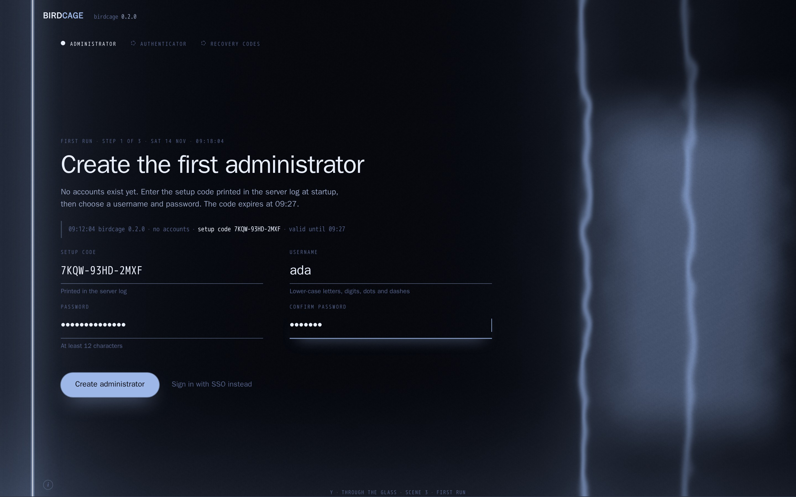
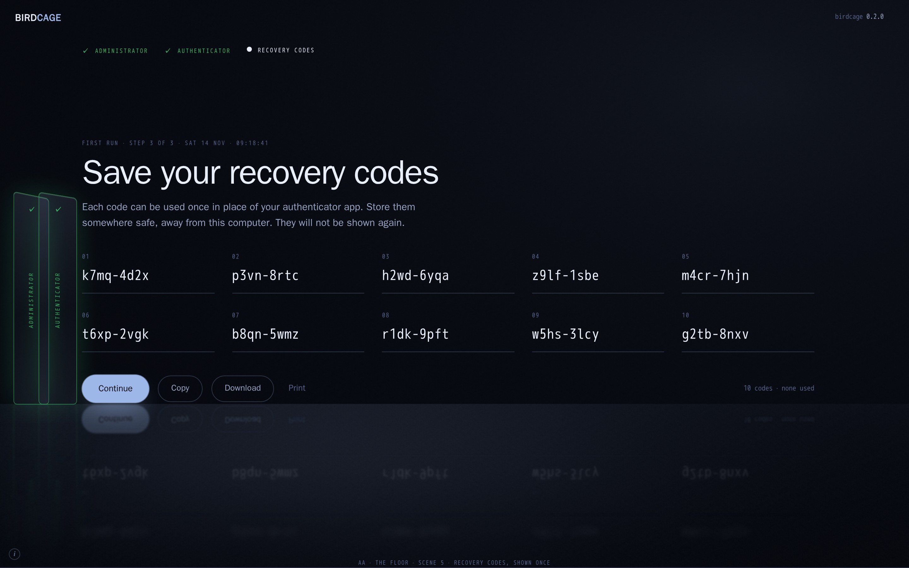

Round 10's verdict was that every round so far had played it safe. This round drops the card: no panel holds the form in any direction. The form is set as large type on the page itself, and each direction puts the visitor in a different position relative to the glass. The glass is drawn by a fragment shader (WebGL), with a CSS fallback. Each page scrolls through the same eight scenes as rounds 9 and 10: sign in, second factor, first run, enrol an authenticator, recovery codes, session expired over the dimmed dashboard, refused, too many attempts. Each has a motion page that loops through the steps and ends in the shell's first view, and stands still under reduced motion. Same data throughout: ada from 192.0.2.10, Sat 14 Nov, birdcage 0.2.0.
The visitor stands in front of a sheet of rolled glass that fills the viewport. The form is on this side of it, at the left, with a bright bevel at the gutter. Each step passed is a sheet behind the visitor, seen as a green edge at the far left; each step ahead is a sheet in front, seen as a refracting edge at the right. The motion is a walk: the sheet in front comes forward, is passed through, and the next is already there; the last is the shell.

direction-y-through-the-glass.html ▸ scene 1 · sign in scene 2 · second factor scene 3 · first run scene 4 · enrol an authenticator scene 5 · recovery codes scene 6 · session expired scene 7 · refused scene 8 · too many attempts motion-y.html · sheet to sheet, then the hand-over ▸The page is a closed door, near black. The only light is a slit at the brink, x = 1368, where the door stands open a few pixels; it widens with each step passed and the door's face takes the light. A refusal is the light gone and a grey hairline; the paused door's hairline is dashed. At the last step the whole door swings away and the dashboard is what was behind it.
direction-z-ajar.html ▸ scene 1 · sign in scene 2 · second factor scene 3 · first run scene 4 · enrol an authenticator scene 5 · recovery codes scene 6 · session expired scene 7 · refused scene 8 · too many attempts motion-z.html · the slit widens, then the door swings ▸The visitor stands on a floor of black glass. The form and the standing slabs for the steps passed (green-edged) and ahead (dashed) are reflected in it, softened with distance. The horizon is at y = 640; at the hand-over it lifts to the band's height, y = 300, and the floor becomes the trace's dark ground.

direction-aa-the-floor.html ▸ scene 1 · sign in scene 2 · second factor scene 3 · first run scene 4 · enrol an authenticator scene 5 · recovery codes scene 6 · session expired scene 7 · refused scene 8 · too many attempts motion-aa.html · the next form rises, then the horizon lifts ▸